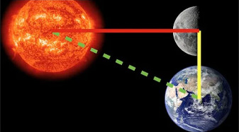
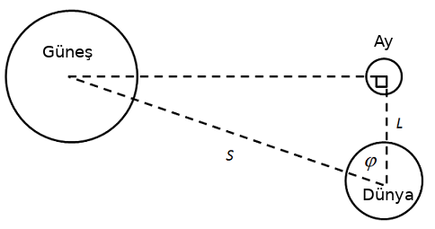
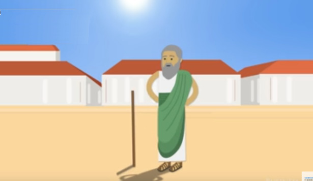
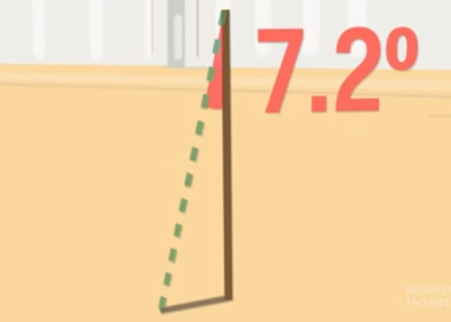
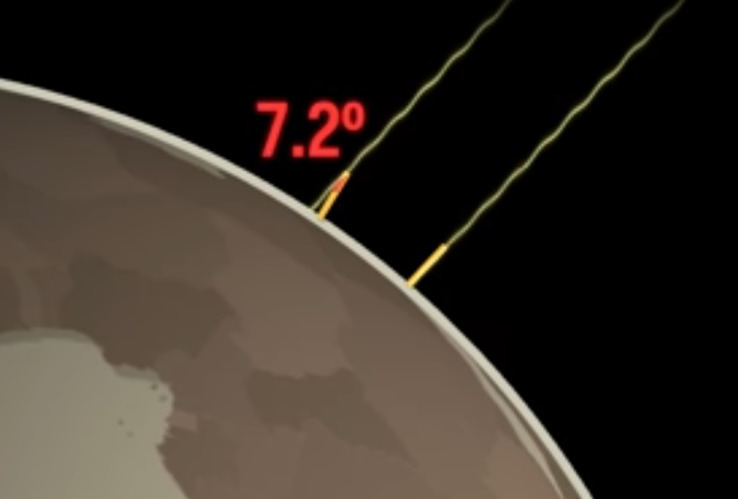
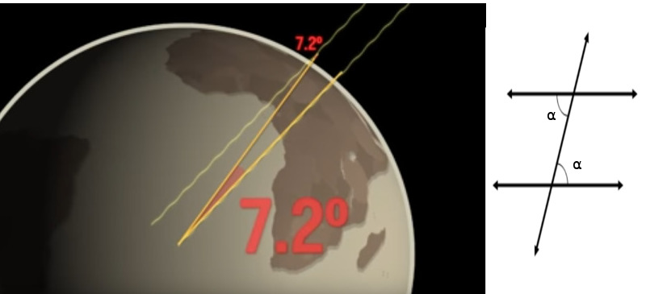

Dünya - Ay Mesafe Oranı
Aristarchus dünya-güneş ve dünya-ay mesafeleri arasında bir oran hesaplamayı başardı [1]. Bunu yapmak için basit açılar kullanması yeterli oldu. Önce ayın yarım ay fazına gelmesini bekledi,

Bu durumda güneş-ay-dünyanın birbirine belli bir şekilde duracağını biliyordu, ki bu ilişki alttaki gibi çizilebilir,

Bulmak istediğimiz $S/L$ oranı. Açı $\varphi$ dünyadaki aletlerle ölçülebilir, kabaca aya doğru kolumuzu dik uzatırız, sonra döndürüp güneye doğru işaret ettik diyelim, bu geçişin açısı $\varphi$ açısıdır. Bu açıyı Aristarchus 97 derece olarak ölçtü. Dünya-Güney-Ay üçlüsünün o andaki yerlerinin bir dik üçgenin köşeleri olduğunu biliyordu, çünkü yarım ay fazından bu böyle olmalıydı. O zaman $S/L$ oranı nasıl bulunur? $\varphi$ için kosinüs hesabı $L/S$ değil midir? Evet. O zaman bilinen $\varphi$'ın kosinüsünü ters çevirirsek, istediğimiz orana erişiriz, $S/L = 1/(L/S) = 1 / \cos\varphi$,
print (1./np.cos(np.deg2rad(87)))
19.10732260929735
Yani güneş bize aydan yaklaşık 19 kat daha uzaktadır. Bunu sadece basit açılarla hesaplayabilmiş olduk.
Dünyanın Yuvarlaklığı, ve Çevre Uzunluğu
Eratosten (Erotosthenes) MO 276 - MO 194 yıllarında yaşayan bilim adamıdır. Bir gün birinden öğrendi ki yazın en uzun günü 21. Haziran'da daha güneyde olan Syene şehrinde eğer yere bir çubuk dikilirse, saat 12'de çubuğun hiç gölgesi olmuyor. Pitagor zamanından beri aslında dünyanin yuvarlak olabileceği tahmin ediliyordu, Eratosten acaba aynı uzun yaz gününde daha kuzeyde olan İskendiriye'de yere bir çubuk dikersem saat 12'de ne görürüm diye düşündü [2].
Bunu yaptı ve gördü ki ufak ta olsa bir gölge var.

Sonra bu gölgenin sonuna kadar sopa basından doğru bir çizgi çekince, oluşan açıya baktı,

Bu önemli bir bilgiydi çünkü şimdi gökyüzüne düşen güneş ışınlarını düşünelim, ışın öyle düşüyor ki o açı oluşmuş,

Şimdi bu ışını düz uzatırsak, bir de sopanın yönünde direk bir çizgiyi direk dünya merkezine çekersek, bir üçgen ortaya çıkar, bir çizgiyi Syene şehrinin sopasından direk dünya merkezine uzatabiliriz (bu çizgi direk merkeze gider çünkü biliyoruz ki o anda oradaki sopanın gölgesi yok, güneş ışını direk sopanın tepesine geliyor)

Böylece dünya merkezinden çıkan iki şehre doğru giden hayali iki çizginin arasındaki açıyı bulmuş olduk. Bu açılar bize tam 360 dereceye göre bir oran verir. Eh eğer İskenderiye ve Syene arasındaki gerçek yeryüzü mesafesini buluyorsak bu oranla o mesafeyi çarpınca tüm dünyanın çevre uzunluğunu elde edebiliriz. Eratosten birine yeryüzü mesafesini ölçtürdü, o kişi iki şehir arasında yürüyerek bu ölçümü yaptı, bulduğu sonuç 5000 stadya, bugünkü ölçüyle yaklaşık 800 km oluyor, oranla çarparsak,
print ('%0.2f km' % (360 / 7.2 * 800.0))
40000.00 km
Bu müthiş bir hesap, çünkü bugün daha kesin aletlerle yapılan ölçümlerin bulduğu sonuç 40,075 kilometredir.
Kaynaklar
[1] Wikipedia, https://en.wikipedia.org/wiki/On_the_Sizes_and_Distances_(Aristarchus)
[2] Science Insider, How The Ancient Greeks Proved Earth Wasn't Flat 2,200 Years Ago, https://youtu.be/EfZ2HZH5CkA